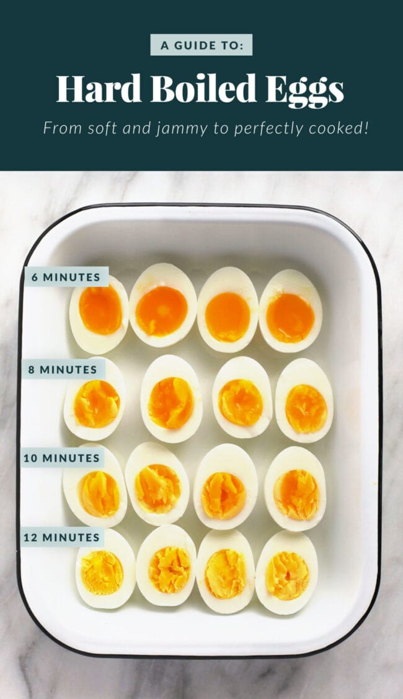

6-min-perfect egg

preps
- If you want the best ramen egg in the world its very easy!
- boil some water with a spoon of salt.
-
when the water are boiling, carefuley, enter the eggs and wait 6-6.5
mins
-
after the period of time that you choose, take them out right to an ice
water bath.
- thats it basicly, you can pill off the eggs
ingredinents
-eggs, -water, -salt, -pot to boil the water.